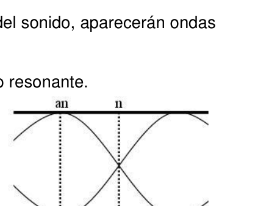

Cp/Cv por velocidad del sonido, tubo de Kundt
PE36. Instituto Industrial Luis A. Huergo
Ciudad de Buenos Aires.
Objetivo:
Determinar el cociente de capacidades caloríficas =Cp/CV de un gas, a partir de
la medida de la velocidad del sonido en ese medio.
Materiales:
Osciloscopio
Tubo de Kundt
Fuente de tensión alterna de frecuencia variable.
Parlante
Micrófono
Cables
Introducción:
La cantidad de calor que debe absorber un sistema para incrementar su
temperatura en 1 grado se denomina capacidad calorífica.
De acuerdo con el primer principio de la termodinámica, puede definirse
entonces la capacidad calorífica a volumen constante de 1 mol de sustancia
como la variación de la energía interna del sistema con la temperatura.
Esta variación de energía por efectos exclusivamente térmicos tiene en cuenta
los diversos modos internos a través de los cuales las moléculas almacenan
dicha energía individualmente. En un gas, por ejemplo, una gran parte de la
energía interna del sistema estará asociada al movimiento aleatorio de traslación
que experimentan las partículas presentes.
De manera análoga, se puede definir una capacidad calorífica a presión
constante como el calor necesario para que el sistema incremente su
temperatura en 1 grado a presión constante.
Experimentalmente, resulta más accesible en sistemas gaseosos medir el
cociente de las capacidades caloríficas a presión y a volumen constantes,
= Cp/CV.
La cantidad conserva la información sobre la estructura interna de las
moléculas que componen el gas.
Uno de los métodos experimentales más usados para determinar el valor de
consiste en medir la velocidad con que se transmite el sonido en ese medio.
Como veremos más adelante, la velocidad del sonido puede relacionarse con el
cociente de capacidades caloríficas a través de cálculos termodinámicos.
La velocidad de propagación del sonido puede parecer esencialmente una
propiedad cinemática del medio, sin embargo es una propiedad termodinámica.
En un medio gaseoso, el sonido se propaga como ondas longitudinales, e
imprime un movimiento oscilatorio sobre las moléculas del gas en la dirección de
propagación de la onda (hacia adelante y hacia atrás). Esto produce un cambio
periódico de presión en el medio, generándose zonas con una presión mayor
(cresta de la onda acústica) y zonas con una presión menor (valles de la onda
acústica).
Si se considera que las propiedades mecánicas del gas se comportan como lo
establece el modelo de gases ideales, puede obtenerse para la velocidad del
sonido la siguiente expresión:
OAF 2014 - 167
El objetivo del trabajo práctico consiste en determinar la velocidad del sonido u
en un gas de masa molar M (aire, masa molar = 29 g/mol) a la temperatura T
(ambiente) y, a partir de estas cantidades, obtener el valor de .
La velocidad del sonido no se mide directamente, sino que se obtiene a partir de
medidas de frecuencia. Para ello es necesario emplear la siguiente ecuación,
que vincula la velocidad de una onda con su frecuencia f y longitud de onda ,
según:
(1)
Método experimental:
El dispositivo que se emplea para medir u se denomina tubo de Kundt. El tubo
posee una longitud fija L, y se encuentra cerrado en ambos extremos mediante
tapas plásticas. En el centro de una de las tapas se fija un micrófono y en el de
la otra un parlante.
El método consiste en generar en el interior del tubo una onda acústica
estacionaria. Para ello, se hace pasar a través del gas contenido en el tubo una
onda acústica de frecuencia conocida.
Inevitablemente, esta onda se refleja en el otro extremo del tubo y se traslada en
sentido inverso, manteniendo su velocidad inicial. Si la longitud del tubo es
constante, existen ciertos valores de frecuencia para los cuales el tubo se
convierte en una cavidad resonante y las ondas acústicas son estacionarias.
La frecuencia fundamental de la cavidad, está dada por una onda acústica que
posee una longitud de onda tal que
/2= L.
En ella, hay un nodo en cada extremo del la cavidad acústica y las oscilaciones
de presión son máximas en el centro del tubo.
Si se va aumentando paulatinamente la frecuencia del sonido, aparecerán ondas
estacionarias sólo cuando se cumple la condición:
z./2= L
Donde z es un número natural que identifica el modo resonante.
A medida que se incrementa z los modos
resonantes exhiben un número creciente de nodos
(y antinodos).
La magnitud del desplazamiento de las moléculas
a lo largo del tubo también puede representarse
mediante curvas (ver figura 1)
Observándose que la distancia entre nodos (o
entre antinodos) corresponde a /2.
Empleando la ecuación (1) podemos relacionar el
número de modo resonante z con la frecuencia fz, que es la medida
experimental:
El experimento consiste en ir incrementando lentamente la frecuencia,
registrando los valores de f correspondientes a los modos resonantes.
Al ir incrementándose la frecuencia, la amplitud de la señal sinusoidal recogida
en el micrófono va cambiando: i) aumenta hasta alcanzar un valor máximo (la
posición del micrófono coincide con un antinodo de una onda estacionaria), ii)
disminuye hasta hacerse nula (el micrófono se encuentra sobre un nodo), iii)
vuelve a aumentar hasta alcanzar un nuevo máximo (el micrófono se encuentra
sobre el antinodo siguiente), y así sucesivamente.
Resulta más sencillo experimentalmente registrar las frecuencias de resonancia
fz correspondientes a los antinodos (oscilaciones de mayor amplitud).
Esta operación debe hacerse con cuidado para evitar saltear la frecuencia
correspondiente al antitodo siguiente.
OAF 2014 - 168 Finalmente, se grafican los valores de las frecuencias de resonancia vs. z obteniéndose la velocidad del sonido de la pendiente de la recta. Para generar las ondas acústicas el parlante se conecta a una fuente de tensión que oscila sinusoidalmente a una dada frecuencia variable conocida. La excitación se realiza en un ámbito de frecuencias audibles entre 100 y 2000 Hz. Esta señal (señal de excitación) se conecta a un canal del osciloscopio (consultar al docente sobre el uso del mismo). La señal proveniente del micrófono (señal estacionaria) se conecta al otro canal del osciloscopio. Se ajusta la ganancia de ambos canales del osciloscopio hasta que puedan verse en la pantalla las ondas de excitación y estacionaria. Si la señal proveniente del micrófono fuera muy baja, puede incrementarse la amplitud de la onda de excitación. Consignas:
- Confeccionar una tabla que relacione los valores de frecuencia resonante obtenidos con el número de antinodo correspondiente.
- Plasmar dichos resultados en un gráfico de f vs. Z
- Obtener la velocidad del sonido a partir de la pendiente de dicho gráfico, con su error.
- Obtener el valor del coeficiente del aire con su correspondiente error.
- Sabiendo que en un gas ideal se cumple la siguiente relación entre las capacidades caloríficas: Cp – Cv = R Calcular el valor de Cp y Cv del aire con sus respectivos errores.

Topic: Thermodynamics, Oscillations & Waves Metodi: Wave Equation, First Law of Thermodynamics, Experimental Data Analysis Competenze: Physical Reasoning, Experimental Data Analysis Objects: Tube, Gas Fonte: Testo (PDF) — p.3
Cp/Cv per velocità del suono, tubo di Kundt
PE36. Istituto industriale Luis A. - Hoorgo
Città di Buenos Aires.
Obiettivo:
Determinare il coefficiente di capacità calorifica =Cp/CV di un gas, a partire da
la misura della velocità del suono in quel mezzo.
Materiali:
Oscilloscopio
Tubo di Kundt
Fonte di tensione alternativa a frequenza variabile.
Parlare
Microfono
Cavi
Introduzione:
La quantità di calore che un sistema deve assorbire per aumentare il suo
La temperatura di 1° è chiamata capacità calorica.
Secondo il primo principio della termodinamica, può essere definito
Quindi la capacità calorifica a volume costante di 1 mol di sostanza
come la variazione dell’energia interna del sistema con la temperatura.
Questa variazione di energia per effetti esclusivamente termici tiene conto
le diverse modalità interne attraverso le quali le molecole si immagazzinano
la stessa energia individualmente. In un gas, ad esempio, gran parte della
l’energia interna del sistema sarà associata al movimento di traslazione casuale
che sperimentano le particelle presenti.
Analogamente, si può definire una capacità calorica a pressione.
Il calore necessario per aumentare il sistema
temperatura a 1°C a pressione costante.
Sperimentalmente, è più accessibile nei sistemi a gas misurare il
il coefficiente delle capacità caloriche a pressione e a volume costanti,
= Cp/CV.
La quantità conserva le informazioni sulla struttura interna delle
molecole che compongono il gas.
Uno dei metodi sperimentali più utilizzati per determinare il valore di
La misurazione consiste nel misurare la velocità con cui il suono si trasmette in quel mezzo.
Come vedremo più avanti, la velocità del suono può essere correlata al
il coefficiente di capacità caloriche attraverso calcoli termodinamici.
La velocità di diffusione del suono può sembrare essenzialmente una
la proprietà cinematica del mezzo, tuttavia è una proprietà termodinamica.
In un ambiente gassoso, il suono si diffonde come onde longitudinali, e
Imprime un movimento oscilante sulle molecole del gas in direzione di
diffusione dell’onda (in avanti e indietro). Questo produce un cambiamento.
Periodo di pressione in mezzo, generando zone con maggiore pressione
(crest dell’onda acustica) e zone a pressione inferiore (valori dell’onda)
- l’acustica). Se si considera che le proprietà meccaniche del gas si comportano come il La velocità di un gas di un’ottica di velocità di velocità di un gas di un gas di velocità di velocità di un gas di velocità di velocità di un gas di velocità di velocità di velocità di velocità di velocità di un gas di velocità di velocità di velocità di velocità di velocità di velocità di velocità di velocità di velocità di velocità di velocità di velocità di velocità di velocità di velocità di velocità di velocità di velocità di velocità di velocità di velocità di velocità di velocità di velocità di velocità di velocità di velocità di velocità di velocità di velocità di velocità di velocità di velocità di velocità di velocità di velocità di velocità di velocità di velocità di velocità di velocità di velocità di velocità di velocità di velocità di velocità di velocità di velocità di velocità di velocità di velocità di velocità di velocità di velocità di velocità di velocità di velocità di velocità di velocità di velocità di velocità di velocità di velocità di velocità di velocità di velocità di velocità di velocità di velocità di velocità di velocità di velocità di velocità di velocità di velocità di velocità di velocità di velocità di velocità di velocità di velocità di velocità di velocità di velocità di velocità di velocità di velocità di velocità di velocità di velocità di velocità di velocità di velocità di velocità di velocità di velocità di velocità di velocità di velocità di velocità di velocità di velocità di velocità di velocità di velocità di velocità di velocità di velocità di velocità di velocità di velocità di velocità di velocità di velocità di velocità di velocità di velocità di velocità di velocità di velocità di velocità di velocità di velocità di velocità di velocità di Suona la seguente espressione:
OAF 2014 - 167 L’obiettivo del lavoro pratico consiste nel determinare la velocità del suono o in un gas di massa mollar M (aria, massa mollar = 29 g/mol) a temperatura T (ambiente) e, da queste quantità, ottenere il valore di . La velocità del suono non viene misurata direttamente, ma viene ottenuta da misurazioni di frequenza. Per questo è necessario utilizzare la seguente equazione, che collega la velocità di un’onda con la sua frequenza f e lunghezza d’onda , , secondo: (1) Metodo sperimentale: Il dispositivo utilizzato per misurare o chiamato tubo di Kundt. Il tubo ha una lunghezza fissa L, e è chiusa a entrambe le estremità mediante copertine di plastica. In un’intera copertura si fissa un microfono e in quella di L’altro è un parlante. Il metodo consiste nel generare all’interno del tubo un’onda acustica.
- Stazionaria. Per questo, viene trasmesso attraverso il gas contenuto nel tubo una l’onda acustica di frequenza nota. Inevitabilmente, questa onda si riflette all’altra estremità del tubo e si trasporta in direzione inversa, mantenendo la velocità iniziale. Se la lunghezza del tubo è La frequenza di un tubo è costante, esistono alcuni valori di frequenza per i quali il tubo si si trasforma in una cavità risonante e le onde acustiche sono stazionarie. La frequenza fondamentale della cavità, è data da un’onda acustica che ha una lunghezza d’onda tale che /2= L. In essa, c’è un nodo a ogni estremità della cavità acustica e delle oscillazioni. La pressione massima è al centro del tubo. Se la frequenza del suono aumenta gradualmente, le onde si presentano. stazionari solo quando la condizione è soddisfatta: z./2= L Dove z è un numero naturale che identifica la modalità di risonanza. Come si aumentano i modi Le risonanti mostrano un numero crescente di nodi (e antinodi). La portata del movimento delle molecole L’intera linea del tubo può essere rappresentata. per le curve (vedi figura 1) Si osserva che la distanza tra i nodi (o tra gli antinodi) corrisponde a /2. Usando l’equazione (1) possiamo correlare il Numero di modo risonante z con frequenza fz, che è la misura
- La ricerca è stata condotta
L’esperimento consiste nel far aumentare lentamente la frequenza. registrando i valori di f corrispondenti ai modi risonanti. Con l’aumento della frequenza, l’ampiezza del segnale sinusoidale raccolta (i) aumenta fino a raggiungere un massimo (la la posizione del microfono corrisponde ad un antinodo di un’onda stazionaria), diminuisce fino a zero (il microfono è situato su un nodo), La frequenza di un’aumento di frequenza è di nuovo elevata fino a raggiungere un nuovo massimo (il microfono si trova sul prossimo antinodo), e così via. È più semplice registrare le frequenze di risonanza sperimentalmente. fz corrispondenti agli antinodi (oscillazioni di maggiore amplitudine). Questa operazione deve essere effettuata con attenzione per evitare di saltare la frequenza. Il primo punto è il seguente:
OAF 2014 - 168 Infine, vengono graficati i valori delle frequenze di risonanza vs. z ottenendo la velocità del suono della pendenza della retta. Per generare onde acustiche il parlante si collega a una fonte di tensione che oscilla sinusoidamente ad una data frequenza variabile nota. La l’escitazione è effettuata in un intervallo di frequenze udibili compreso tra 100 e 2000 Hz. Questo segnale (signale di eccitazione) si collega a un canale dell’ oscilloscopio. (consigliare al docente sull’uso di questo). Il segnale proveniente dal microfono (signale stazionario) si collega all’altro canale dell’oscilloscopio. Si regola la guadagno di entrambi i canali dell’oscilloscopio fino a che possono essere viste sullo schermo le onde di eccitazione e di stazionarietà. Si la Se il segnale proveniente dal microfono è molto basso, la frequenza può aumentare. amplitudine dell’onda di eccitazione. Consigni:
- Confezionare una tabella che relaziona i valori di frequenza risonante ottenuto con il numero di antinodo corrispondente.
- Configgere tali risultati in un grafico di f vs. Z
- Ottenere la velocità del suono dalla pendenza di tale grafico, con il suo errore.
- Ottenere il valore del coefficiente di aria con il relativo errore.
- Sapendo che in un gas ideale si soddisfa il seguente rapporto tra le capacità caloriche: Cp – Cv = R Calcolare il valore di Cp e Cv dell’aria con i loro errori.
Topic: Thermodynamics, Oscillations & Waves Metodi: Wave Equation, First Law of Thermodynamics, Experimental Data Analysis Competenze: Physical Reasoning, Experimental Data Analysis Objects: Tube, Gas Fonte: Testo (PDF) — p.3
The following is the list of the samples taken from the sample:
PE36. The Spanish Ministry of Foreign Affairs I ‘m not .
City of Buenos Aires.
The objective:
Determine the heat capacity ratio =Cp/CV of a gas, starting from
the measurement of the speed of sound in that medium.
Materials:
Oscilloscope
Kundt tube
Variable frequency alternating voltage source.
Speaking
Microphone
Cables
The Commission has also adopted a proposal for a directive on the protection of workers’ rights.
The amount of heat a system needs to absorb to increase its heat output.
The temperature at 1°C is called the heat capacity.
According to the first principle of thermodynamics, it can be defined
Then the constant volume heat capacity of 1 mol of substance.
It’s the change in the internal energy of the system with temperature.
This energy variation by heat-only effects takes into account
The various internal modes through which molecules store
The energy is given individually. In a gas, for example, a large part of the
The internal energy of the system will be associated with the random translation movement
They’re experimenting with the particles present.
Similarly, a heat capacity under pressure can be defined.
The heat required to increase the system’s capacity is constant.
temperature at 1 degree at constant pressure.
Experimentally, it is more accessible in gas systems to measure the
The heat capacity ratio at constant pressure and constant volume
= Cp/CV.
The quantity retains information on the internal structure of the
molecules that make up the gas.
One of the most widely used experimental methods for determining the value of
It’s about measuring the speed at which sound is transmitted in that medium.
As we’ll see later, the speed of sound can be related to the
The heat capacity ratio by thermodynamic calculations.
The speed at which sound propagates may seem essentially a
kinematic property of the medium, however it is a thermodynamic property.
In a gaseous environment, sound propagates as longitudinal waves, and
It prints an oscillatory motion over the gas molecules in the direction of
wave propagation (forward and backward). This brings about a change.
The pressure period in the medium, generating areas with higher pressure
(acoustic wave crest) and areas with lower pressure (wave valves)
(Acoustic)
If the mechanical properties of the gas are considered to behave as
The ideal gas model is established, and can be obtained for the speed of the
The following expression sounds:
The following is the list of the countries of the European Union: The objective of the practical work is to determine the speed of sound or in a gas of molar mass M (air, molar mass = 29 g/mol) at T (environment) and, from these quantities, get the value of . The speed of sound is not directly measured, but is obtained from frequency measurements. For this it is necessary to use the following equation, which links the speed of a wave to its frequency f and wavelength , according to: (1) Experimental method: The device used to measure or is called the Kundt tube. The tube . It has a fixed length L, and is closed at both ends by plastic covers. A microphone is attached to the centre of one of the lids and the microphone is attached to the other side of the lid. The other one’s a speaker. The method is to generate an acoustic wave inside the tube. It’s a stationary. For this purpose, it is passed through the gas contained in the tube a Acoustic wave of known frequency. Inevitably, this wave reflects at the other end of the tube and moves into the In reverse, maintaining its initial speed. If the length of the tube is The frequency of the tube is constant, there are certain frequency values for which the tube is It turns into a resonant cavity and the acoustic waves are stationary. The fundamental frequency of the cavity is given by an acoustic wave that It has a wavelength such that /2= L. In it, there’s a node at each end of the acoustic cavity and the oscillations. The pressure is maximum at the center of the tube. If you gradually increase the frequency of the sound, waves will appear. stationary only when the condition is fulfilled: z./2= L Where z is a natural number that identifies the resonant mode. As the modes increase Resonants display an increasing number of nodes (and antinodes). The magnitude of the movement of molecules along the tube can also be represented by curves (see Figure 1) Note that the distance between nodes (or between antinodes) is /2. Using equation (1) we can relate the The number of resonant mode z with frequency fz, which is the measure The experimental:
The experiment is to slowly increase the frequency. recording the f values for the resonant modes. As the frequency increases, the amplitude of the synusoidal signal collected The microphone is changing: (i) increasing to a maximum value (the the position of the microphone corresponds to a stationary wave antinode), decreases to zero (the microphone is on a node), The microphone is located at the top of the screen. on the next antinode), and so on. It is easier to experimentally record the resonance frequencies. fz corresponding to the antinodes (larger oscillations). This operation must be done carefully to avoid frequency overruns. The following counterpart.
The following is the list of the Member States’ financial statements: Finally, the values of the resonance frequencies vs. z The speed of sound is obtained from the slope of the straight line. To generate the acoustic waves the speaker is connected to a voltage source which oscillates sinusoidally at a given known variable frequency. La The excitation is carried out in a range of audible frequencies between 100 and 2000 Hz. This signal (excitation signal) is connected to a channel of the oscilloscope. (consult the teacher about the use of the same). The signal from the microphone (stationary signal) is connected to the other channel The oscilloscope. Adjust the gain of both channels of the oscilloscope up to You can see the excitement and stationary waves on the screen. Si la The microphone signal is very low, the signal can be increased. The amplitude of the excitation wave. The following is the list of winners:
- Create a table that relates the frequency values Resonant obtained with the corresponding antinode number.
- Placing these results on a graph of f vs. Z
- Get the speed of sound from the slope of that graph, with his mistake.
- Get the air coefficient value with its corresponding error.
- Knowing that in an ideal gas the following relationship between the two is fulfilled: Heating capacity: Cp – Cv = R Calculate the values of Cp and Cv of air with their respective errors.
Topic: Thermodynamics, Oscillations & Waves Metodi: Wave Equation, First Law of Thermodynamics, Experimental Data Analysis Competenze: Physical Reasoning, Experimental Data Analysis Objects: Tube, Gas Fonte: Testo (PDF) — p.3